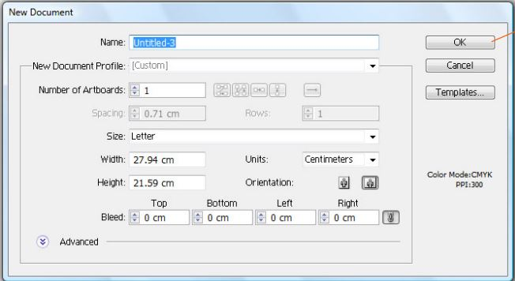
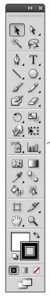

Se refiere al uso de fórmulas geométricas para representar imágenes por software y hardware. Esto significa que los dibujos vectoriales son creados con primitivas geométricas como puntos, líneas, curvas o polígonos.
Las imágenes vectoriales son más flexibles porque pueden ser redimensionadas y extendidas sin perder calidad. Incluso la animación por gráficos vectoriales suele ser más sencilla. Otra ventaja de los gráficos vectoriales es que su representación suele requerir menos memoria y menos espacio de almacenamiento.
Para comenzar a trabajar en el programa se activa la pestaña en el borde superior izquierdo, la cual aparece como “File” , al tocar con el mouse sale un desplegado en el cual vamos a hacer click en el primero que es “New”.
Siempre que iniciamos un área nueva de trabajo, este programa automáticamente nos muestra este cuadro, en el cual podemos seleccionar el tamaño de nuestra hoja, si queremos que nuestro trabajo tenga nombre, que orientación queremos que tenga (horizontal y vertical).
El panel de herramientas aparece a la izquierda de la pantalla. Esta barra nos permite crear, seleccionar y manipular objetos en el programa. Algunas herramientas disponen de opciones que aparecen al hacer doble click en una de ellas. Entre ellas se incluyen herramientas que permiten usar texto, seleccionar pintar, mover, borrar, editar y rotar objetos e imágenes.
